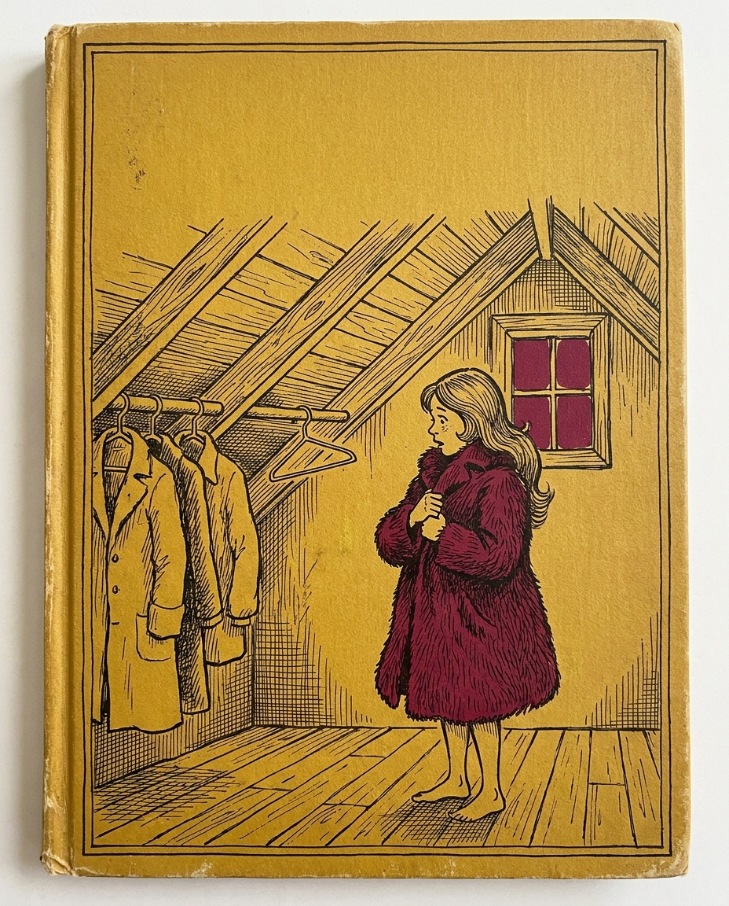

In which Chelsae steals a very cool maroon fuzzy jacket, admits it later, refuses to return it, holds it for ransom, and then tries to justify it, wasting hours of other people’s time in the process.
This document covers a two-night lodging stay at the Alpaca Playhouse on April 17–18, 2026, in which the guest removed a privately-owned maroon coat from a closet in the main residence and transported it to her home (approximately 30 miles away in Austin) without permission. After being told the host was upset, the guest reframed the incident as a safety and comfort grievance, requested a partial refund, and proposed that the host or a third party retrieve the jacket on her behalf rather than return it.
Core finding: Across two parallel WhatsApp threads — one with Rahul (the host), one with Monique (the other guest) — plus a 2:26 audio message recorded for Monique, the guest’s justification for taking the coat shifted at least four times — from “it had a price tag on it” (Apr 18), to “I thought the attic was a lost and found” (Apr 22), to “I was freezing cold … in survival” (Apr 22 / Monique audio), to “I’m happy to toss it in the trash honestly” (Apr 25). None of these framings were offered before the item was removed.
About the price tag. The maroon coat carried a retail price tag because it had not yet been worn after being purchased — not because it was for sale. The host operates a residence and lodging business. The host does not, and obviously does not, run a used-clothing retail operation out of his home closet. A reasonable person, on encountering a personal garment hanging in a private closet inside someone’s home, does not infer “this is inventory.” A reasonable person infers “this is a personal item belonging to the homeowner.” The price tag is evidence the coat was not worn after purchase; it is not evidence of a storefront.
Pattern observed: The communications display a consistent structure of (1) acting unilaterally, (2) treating retroactive notification as equivalent to consent, (3) bundling an unrelated grievance (a 3 AM incident with another guest’s invited visitors) onto the original act to manufacture a refund claim, (4) routing communication through third parties to avoid the person who raised the objection, and (5) using therapeutic language (“boundary,” “triggered,” “assuming negative intent,” “survival”) to reposition accountability requests as emotional aggression.
Resolution sought: Return of the coat at the guest’s expense. No refund is owed. The unrelated 3 AM incident, if independently substantiated, would be addressed on its own merits and is not material to the property question.
“Consent” is a load-bearing word in Chelsae’s public work. A tantric coach running “temple” experiences, couples retreats, and 1:1 facilitation sells consent culture as a core competency — her entire professional identity rests on the principle that taking something from another person without first asking and receiving a yes is the line you do not cross.
The line was crossed here in the most ordinary, material way possible: she walked into a private home, went to the attic, removed a personal garment hanging on a rod, and drove off with it. She did not ask. She told the owner about it after the fact, from another city, framed as “can I buy this” rather than “I took this.”
A practitioner who cannot apply consent to a coat hanging in someone’s home is not in a credible position to teach it to anyone — not to clients paying for couples coaching, not to participants in “temple” retreats, not to anyone.
Two parallel WhatsApp threads. Rahul ↔ Chelsae (the host) and Monique ↔ Chelsae (the other guest in the unit). Monique forwarded screenshots of her thread to Rahul on April 27 so he could see the parallel conversation. The thread label appears under each message.
| Date / time | From | What was said or done |
|---|---|---|
| Fri Apr 17 – Sat Apr 18 (two-night stay) |
Chelsae | Stays two nights at the Alpaca Playhouse, sharing the unit with another guest (Monique). Privately-owned maroon coat is removed from a closet inside the main residence (the “attic” in her later phrasing) and taken with her on departure. No advance ask. No notification at the time of removal. |
| Sat Apr 18 11:14 PM |
Chelsae → Rahul |
First message about the coat — sent after she has already left with it: “Hi! Can I buy a jacket from the lost and found? It had a price tag on it and I’m down to just buy it if it’s an option.” No identification of which jacket. No mention that it is already in her possession. |
| Sun Apr 19 3:17 AM |
Rahul → Chelsae |
“wait? what? send me a picture.” |
| Sun Apr 19 9:38 PM |
Chelsae → Rahul |
“I forgot to respond. It was the maroon furry coat from the lost and found attic. I brought it back with me. If it’s not an option I can give it to you when you’re in Austin next.” First disclosure that the item is now in Austin. The proposed return method requires the owner to drive to her. |
| Mon Apr 20 8:05 AM |
Chelsae → Rahul |
“There are 2 of them. Monique wore the other one.” |
| Mon Apr 20 10:19 PM |
Rahul → Chelsae |
“send me a picture” (second request). |
| Tue Apr 21 3:43 PM |
Chelsae → Rahul |
Sends a mirror selfie wearing the maroon coat. First visual confirmation of the specific item, three days after she removed it. |
| Wed Apr 22 1:11 AM |
Chelsae → Rahul |
“I’m confused.” — sent after Sonia (the other host) has independently expressed that taking the coat was not okay. |
| Wed Apr 22 12:08 PM |
Chelsae → Rahul |
Long message to Rahul reframing the situation: “Hey Rahul … Around 3am, two men entered the RV and tried to come into my room … the cold conditions sleeping outside made it difficult to rest and I used the jacket that I found in the lost and found so I could be warm … Given that the experience felt compromised from both a safety and comfort standpoint, I’d like to request a partial refund for that night and I am happy to give the jacket back.” First mention of the 3 AM incident — four days after the night in question and only after the jacket became contested. Note: the “intruders” were Monique’s invited guests, brought to the unit during a severe Texas storm. |
| ~ Apr 23–24 (undated) |
Chelsae → Monique |
Records and sends a 2:26 audio message to Monique asking her to act as the coat-return intermediary so that she does not have to deal with Sonia. Full transcript below. |
| Sat Apr 25 1:30 PM |
Monique → Chelsae |
“Hi love I’m back in Seattle! Sorry about that awkward coat situation, you could just go and drop it off!” Monique — the other guest, who has now been pulled into the dispute — offers the simplest possible resolution: Chelsae drives 30 miles, drops the coat at the door, done. |
| Sat Apr 25 1:34 PM |
Chelsae → Monique |
“No worries love. I’m not planning on going to the house but it’s not a big deal if you cannot. … I don’t wish to go back but appreciate the awareness of that option.” Refuses the simplest possible return path: drop the coat off herself. |
| Sat Apr 25 1:37 PM |
Monique → Chelsae |
“Do you feel like it’s important to return to it to clear up the miscommunication?” Inviting Chelsae to repair directly with Sonia. |
| Sat Apr 25 1:53–1:55 PM |
Chelsae → Monique |
“I don’t. … What would clear up the conversation is an apology around an assumption that she made regarding the jacket and a refund for the night I stayed. … But I don’t wish to bring you into this and that isn’t actually what I’m asking. I’m not asking for advice. Nor coaching. I was asking if you were driving through Austin in the next few weeks. That’s mainly my ask. … The attachment to this jacket is ridiculous and not worth losing a relationship over. I’m happy to toss it in the trash honestly.” Refuses repair, dictates conditions for forgiveness, and threatens to destroy the property. |
| Sat Apr 25 2:03 PM |
Monique → Chelsae |
“Copy that I hear you.” |
| Sun Apr 26 6:26 PM |
Monique → Chelsae |
The actual refund offer. “Would you like me to refund you the money for the night at the alpaca house? Would that clear that energy up? Let me know!” Monique — the party whose invited visitors caused the 3 AM disturbance Chelsae cites — offers to make her financially whole. This is the precise relief Chelsae has been demanding from Sonia/Rahul. |
| Mon Apr 27 1:50 PM |
Chelsae → Monique |
Declines the refund. Pivots. Forwards her own earlier audio message back to Monique (as proof-of-her-position) and writes: “Was there a price tag on the jacket?” — relitigating the original premise instead of accepting the financial relief just offered. |
| Mon Apr 27 1:51–1:52 PM |
Chelsae → Monique |
Pre-emptively defends Sonia’s character to Monique (“I have never seen Sonia act irresponsible … she is the most level, reliable person I have ever met”) — an attempt to recruit Monique against Sonia by inverting the framing — and adds new grievances about a third party (“In regards to Shehab going into sleep in my room”). Widening the complaint surface as resolution approaches. |
| Mon Apr 27 (later) |
Monique → Rahul |
Forwards the entire screenshot record of her thread with Chelsae — including her own refund offer and Chelsae’s refusal — to Rahul, so the host can see the parallel conversation. This is the source for everything in the Monique ↔ Chelsae rows above. |
Voice memo, 2 minutes 26 seconds. Recorded by Chelsae, sent privately to Monique (the other guest who shared the unit on April 18). Forwarded to Rahul on April 27 by Chelsae herself, presumably as supporting material for her position.
Internal contradictions in this single message: (1) “there was a price tag on it” directly contradicts “I thought the attic was a lost and found” — lost-and-found items do not have retail price tags; (2) “you guys can have the jacket. I don’t need this jacket” directly contradicts the simultaneous offer of the same jacket as conditional on a refund; (3) “I don’t have the capacity to drive out there” is offered as a fact while the same person had the capacity to drive in, stay overnight, and leave with someone else’s property.
The following are not character claims. Each pattern is a structural observation supported by direct quotation from the guest’s own messages. They are listed because they form a coherent system — the patterns reinforce one another and together explain why every offered resolution has produced more demands rather than closure.
The first message about the coat was sent after the coat had already left the property. The second message disclosed it was already in Austin. At no point was the question “can I take this” asked before taking it. The framing — “can I buy this” — presupposes the item is already hers to negotiate over.
This is a hallmark of an entitlement frame: the actor moves first, then offers a courtesy notification, and treats any objection to the underlying act as unreasonable because she “already said something.”
The consent irony. “Consent” is a load-bearing word in Chelsae’s public work — a tantric coach running “temple” experiences, couples retreats, and 1:1 facilitation sells consent culture as a core competency. That entire professional identity rests on the principle that taking something from another person — their attention, their body, their space — without first asking and receiving a yes, is the line you do not cross. The line was crossed here in the most ordinary, material way possible: she walked into a private home, opened a closet, removed a personal garment, and drove off with it. She did not ask. She told the owner about it after the fact, from another city, framed as “can I buy this” rather than “I took this.” A practitioner who cannot apply consent to a coat hanging in someone’s closet is not in a credible position to teach it.
A person operating in good faith holds one explanation. A person constructing a defense after the fact cycles through several until one lands. The April 27 return to the original price-tag claim — nine days later, after that framing has already been contradicted by her own “I thought it was a lost and found” statement — is a tell that the goal is not clarity but winning.
The 3 AM disturbance — if it occurred as described — is a separate matter. It involved another guest’s invited visitors during a severe weather event, was not caused by the host, was not raised contemporaneously, and was not raised even two or three days later. It surfaces for the first time on April 22, in the same message that asks for a refund and offers the jacket as a bargaining chip. That sequence is the entire issue.
A real safety complaint is filed within hours, not four days. A real safety complaint stands on its own and does not require a stolen jacket to be attached to it. The bundling reveals the function: the grievance is not a complaint, it is a setoff — a counter-charge invented to neutralize the original wrong. Two unrelated facts cannot justify each other simply by being adjacent in a paragraph.
Sonia raised the objection. Chelsae’s response is to ask Monique to handle the return on her behalf, with the explicit ask: “maybe you can support me because Sonia’s like so triggered … I don’t really feel like messaging her about this, actually. I feel like I have a boundary around that type of energy.”
This is structural avoidance dressed as self-care. The boundary is being used to opt out of the only conversation that could resolve the situation, while simultaneously recruiting a third party as ally. It also pre-frames Sonia to Monique as unreasonable (“triggered,” “assuming negative intent”) so that Monique enters any future conversation with Sonia already biased.
“Boundary,” “triggered,” “assuming negative intent,” “survival,” “dysregulated,” “that type of energy,” “not worth losing a relationship over.” These terms have legitimate clinical meanings. Used in this conversation they consistently do one thing: convert a request that she answer for an action into evidence that the requester is the one acting badly.
The vocabulary creates an asymmetry: she gets to feel things; the people she has wronged are required to manage how they react to her so as not to violate her boundary.
She drove ~30 miles to the property. She has the coat in her possession. The coat-return options she has offered, in order:
Options she has explicitly ruled out: dropping it off herself when next in the area (refused: “I don’t wish to go back”) and shipping it back at her own cost (not offered).
The structural ask is: I created the problem; you absorb the time, the gas, and the logistics to fix it; if you decline I will destroy your property. No version of this is a fair offer.
Closing line of the Monique audio: “I just should not have stayed there. I didn’t even know that that was going to happen and whatever. Just dealing with all these consequences.”
Two grammatical moves are doing work here. First, “I should not have stayed there” relocates the originating choice to the host’s house, not to her own decision to remove an item from a closet. Second, “dealing with all these consequences” positions her as the recipient of consequences rather than the cause of them — as if a weather system had developed around her independent of any action she took.
The same move appears in the April 25 line: “The attachment to this jacket is ridiculous and not worth losing a relationship over.” This sentence ascribes the “attachment” (and therefore the unreasonableness) to the owner of the property — not to the person who removed someone else’s belongings from their home.
On Sunday April 26 at 6:26 PM, Monique — the party most directly connected to the disturbance Chelsae cited as her grievance — offered the precise relief Chelsae had been demanding: “Would you like me to refund you the money for the night at the alpaca house? Would that clear that energy up? Let me know!” Unconditional. No defensiveness. From the person with the most direct moral standing to make the offer.
A person operating in good faith would have accepted, returned the coat, and closed the loop. Instead, the next afternoon (Apr 27), Chelsae:
This is the load-bearing observation of the entire situation. The actual cash she had been demanding was put on the table by the person most responsible for the underlying grievance, and she chose to relitigate the jacket instead. That tells you the refund was never the point — it was the leverage. Conciliation did not produce closure; it produced additional demands. The goal of the engagement is not resolution but an admission of fault from the other side.
The real-world cost of this incident has not been borne by Chelsae. It has been borne by the people she took from and the person she dragged into mediating. A partial accounting:
The total cost of this incident, measured in hours and aggravation, is now several times the value of the coat itself, and it has been incurred almost entirely by people who did nothing wrong. Every hour of that cost was preventable. The coat could have been returned the day she got back to Austin. The same is true today. The cost compounds because she has chosen, repeatedly, to make it compound.
Chelsae Zirna is a public-facing professional. Her website (chelsaezirna.com) markets her as “an international speaker, facilitator, and coach” with five years of work in “rewilding the feminine frequency and restoring humanity to its authentic nature.” She states she has “empowered over 2500 people across 30 countries with the tools to cultivate emotional liberation, radical self responsibility and inner authority.” She sells 1:1 coaching for “Kings, Queens, Couples,” programs called Empress Codes, Embodied Leadership Academy, and Metamorphosis, plus a podcast featuring “vulnerable stories.”
The contradictions below compare her stated public values to her documented conduct in the messages above. The point of this comparison is not to prejudge her work generally — it is to note that the specific virtues she charges money to teach are precisely the virtues absent from how she handled this situation.
| What she sells / says publicly | What she actually did here |
|---|---|
| “Radical self responsibility” — a foundational virtue she markets as core to her practice and charges clients to learn. | Took an item from a private closet without asking, disclosed it only after the fact, then attached an unrelated grievance to demand a refund rather than acknowledge the act. The structure of every message is the opposite of self-responsibility: it is responsibility-deflection. |
| “Open Safely, Love Deeply” — her primary headline tagline. | Refused to communicate directly with the person who raised the concern (Sonia), routed the conversation through a third party (Monique), and pre-framed Sonia to that third party as “triggered” and “assuming negative intent.” That is the opposite of opening safely; it is a recruitment campaign. |
| “I SEE YOU, I HONOR YOU, and I love you” — another front-page tagline. | Threatened to destroy the host’s property (“happy to toss it in the trash honestly”) when the resolution she demanded was not immediately granted. Honoring someone does not include using their property as a hostage. |
| Markets “emotional liberation” and freedom from blame/victim cycles. | Casts herself as the victim of “all these consequences” without acknowledging that she caused the consequences. The grammatical move — “just dealing with all these consequences” — is exactly the victim posture her own marketing claims to liberate clients from. |
| Sells coaching for couples on emotional safety and healthy conflict. | Cycled through five different framings of the same act in nine days. Refused the simplest possible repair (return the coat herself). Escalated when offered conciliation. None of this would be acceptable advice to give a client about how to handle a conflict with a partner. |
| Speaks of “guiding clients to their edge of discomfort” and helping them “soften into their deepest truth.” | The edge of discomfort here is one short sentence: “I took something that wasn’t mine. I’ll ship it back at my expense. I’m sorry.” That is the truth she would, by her own marketing, charge a client to soften into. She has not approached it. |
| Public brand of “authentic nature” and “inner authority.” | Her authority claims here all route outward: Sonia is wrong, Sonia is triggered, Monique should mediate, Rahul should refund, the jacket should be retrieved by someone else. Inner authority does not look like assigning every part of a problem you created to other people. |
| Therapeutic vocabulary used in her marketing — “rewilding,” “embodiment,” “codes,” “temple.” | Same vocabulary deployed defensively in the dispute: “boundary around that energy,” “triggered,” “assuming negative intent,” “survival,” “dysregulated.” The same language the brand uses to signal expertise is also the language being used here to avoid accountability. Either it is a tool for growth or it is a shield against feedback — it cannot be both at once. |
The ordinary defense to a comparison like this is that nobody is perfect and everyone falls short of their stated values sometimes. That defense applies to private people. It applies less squarely to a person who charges money to teach the exact virtue she is failing to embody, who positions herself as having “empowered over 2500 people” in those virtues, and whose first instinct on being asked to embody them was to recruit a third party to handle the situation for her.
This is the load-bearing fact of the entire dispute, and it is documented in the WhatsApp thread (forwarded by Monique to Rahul on April 27).
On Sunday April 26 at 6:26 PM, Monique — the other guest sharing the unit, whose invited visitors were the source of the 3 AM disturbance Chelsae now cites as the basis for her refund — sent Chelsae:
This was the precise relief Chelsae had been demanding from Sonia and from Rahul: cash for the night. From the party with the most direct moral standing to offer it. Unconditional. No defensiveness, no demand for an apology, no countercharge.
Chelsae’s response, delivered the next afternoon at 1:50 PM on April 27, was not to accept. It was to forward her own earlier audio message back to Monique and to write: “Was there a price tag on the jacket?” She then defended Sonia’s character to Monique (an attempt to recruit Monique against Sonia by inverting the framing) and added new grievances about a third party (Shehab).
Two things follow from this:
A genuine financial-harm complaint accepts being made whole. A complaint that is being used as leverage in an unrelated dispute keeps cycling, because the money is not the actual point. Declining Monique’s offer in real time, on screen, makes clear which of those two things this is.
The host takes seriously any guest reporting that they felt unsafe overnight. To the extent the April 18 3 AM disturbance is described accurately, it appears to have involved invited visitors of the other renter (Monique), brought to the unit because of a severe weather event in the Austin area that night that made driving genuinely dangerous — the message about it reportedly did not reach Chelsae due to cell service issues during the storm. That is not a host-caused safety failure, and it was not raised at any time in the 96 hours after the night in question. If the guest wishes to file this as a standalone concern — not bundled with the property question — it can be reviewed on its own merits.
Important context on Monique’s side of this. Chelsae had told Monique earlier that she would not be at the Spartan trailer that night. Monique reasonably believed the trailer would be empty, which is why she invited people over to wait out the storm. She still messaged Chelsae as a courtesy — that message did not get through due to the cell service conditions during the weather event. So the framing of “men entered the RV at 3 AM” collapses into something much more ordinary once that context is added: the other guest, told the space would be unused, hosted people during a dangerous storm and tried to notify the absent guest. Chelsae then reversed her plan and showed up unannounced. That is a coordination failure produced largely by Chelsae’s own changed plans — not an intrusion, and not a host-side safety lapse.
Who the “intruders” actually were. The people Monique invited over that night were not random strangers either. At least one of them had previously lived at the house and had been vetted as a known, positive community member — the kind of person who would reasonably be welcomed back during a dangerous storm. Chelsae had no way to know that from inside the trailer at 3 AM in the dark, and her startled reaction in the moment is understandable on its own terms. But the way that moment has since been deployed — as “two men entered the RV and tried to come into my room” weaponized into a refund demand four days later — describes a situation that, on the facts, was a returning community member sheltering from a storm in a space he’d been told was empty. Those are very different stories.
A guest stayed two nights, took a jacket hanging in the attic of the house, drove it 30 miles home, and only mentioned it after the fact. When the owners said taking it wasn’t okay, she invented a separate complaint about one of those nights, demanded a refund, and proposed that the owners drive to her to retrieve their own property. When the other guest in the unit (Monique) offered to refund her for the room out of her own pocket, she didn’t accept it — she relitigated the jacket instead. None of these things are okay. None of them are made okay by the others. The jacket needs to come back — on her dime — and that’s the end of it.
The analytical Finding above states what is owed on the merits: nothing. This is a separate offer made on top of that, voluntarily, because not being exposed to your mental fabrications ever again has meaningful value.
For context on the $60 figure: Chelsae paid $30/night for the two-night stay — a rate that is already well below market for a private bedroom in the Austin area, let alone one on a 12-acre property with shared amenities. The full refund being offered here is, in absolute terms, a small price for permanent closure.
Because you are such an annoying hypocritical waste of time and life energy for many, I am happy to give you this offer:
When you ship the jacket back, place a single piece of paper in the right outside pocket with your Venmo or Zelle handle on it. That is how the refund will be sent.
Do not issue any further communication to me, or to any of my associates, on this matter. If you do, the offer is rescinded. I do not want to hear from you again. The piece of paper in the pocket is the only message that needs to pass between us.
Standing offer. Open until accepted, declined, or until I take it off the table. Acceptance means all five terms; partial acceptance is a decline. If declined, the analytical Finding above stands and the jacket is still owed back at your expense, with no refund.